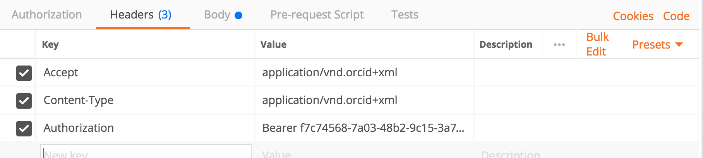
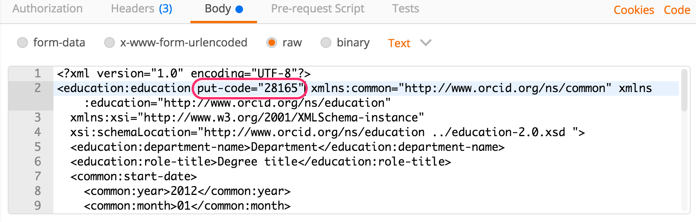
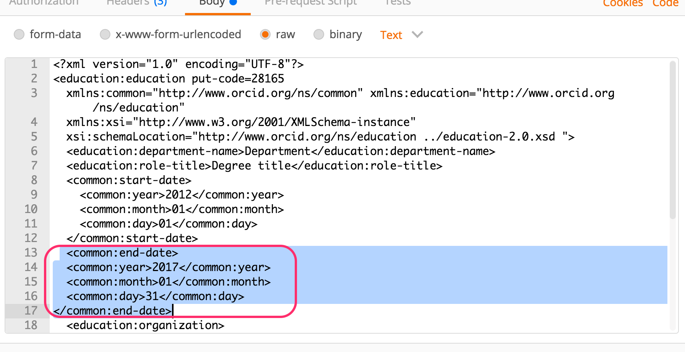

7. UPDATE information
In a real-world situation, you may need to update a researcher's affiliation. In this section, we'll update our education affiliation to include an end date.
Update an education affiliation
- In the Response section from the POST request we just made, click Headers and scroll down to Location. Copy the 5-character code at the end of the URI - this is the put-code for the education affiliation that you added in the previous section.

- At the top of the screen, set the request type to PUT
- In the Request URL field, add a
/to the end of the URL and paste the put code after it. The full URL should be:
https://api.sandbox.orcid.org/v2.0/[ORCID ID]/education/[PUT CODE]
Replace [ORCID ID] with the iD for your Sandbox record, format XXXX-XXXX-XXXX-XXXX and [PUT CODE] with the put-code for your education affiliation

- Click Authorization and make sure that your ORCID Sandbox token is still selected, and the Add token to dropdown is still set to Header
- Click Headers and make sure that
acceptandContent-typeare both set toapplication/vnd.orcid+xml
 - Click Body (the XML for the affiliation you added in the previous step should appear).
- Inside the
<education:educationtag, addput-code="[PUT CODE]"
Replace [PUT CODE] with the put-code for your education affiliation, ex<education:education put-code="26971"
 - Copy the affiliation end date XML at the end of this section and paste it beneath the
</common:start-date>tag (and above the<education:organization>tag)
 - Click Send.
- The results will appear in the Response at the bottom of the screen. If you see Status: 200 OK, your education affiliation was successfully updated!

Got an error? Check the ORCID API error code reference for help - Visit the public view of your Sandbox record at
http://sandbox.orcid.org/[ORCID ID]to see your updated education affiliation.

Affiliation end date XML
<common:end-date>
<common:year>2017</common:year>
<common:month>01</common:month>
<common:day>31</common:day>
</common:end-date>